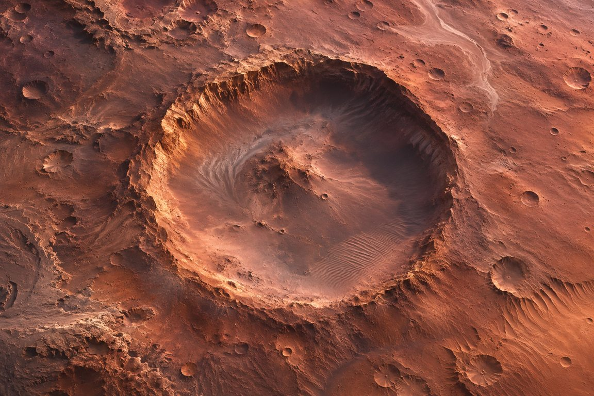

Dossier Mars
Mars X Files Map
Start here to browse the Mars dossiers by strength of evidence. The map connects ancient water, Cydonia and visual anomalies with established findings, open debates and speculative claims.
Updated: Apr 17, 2026
2 min read

On this page
What is
Working index to sort the Mars package in X Files with a simple taxonomy: strong, debated, speculative.
reading rule
strong= reasonably solid scientific or official evidence within saved sourcesdebated= hypothesis with interesting signal but still open or historically ambiguousspeculative= high cultural/conspiracy/narrative value, but no strong empirical validation
1) Strong
- Ancient Water on Mars and Climate Loss — scientific baseline: past surface water, climate loss, and plausible ancient habitability
- Ancient Ocean on Mars: Evidence vs Open Debate — strong geomorphological evidence for an ancient ocean in the north, although not definitive
- Cydonia: Martian Mystery Region — Cydonia official geological reading
- Face on Mars: Official Image Reanalysis — model case of reduced pareidolia due to better resolution
2) Debated
- Mars Canals: Schiaparelli, Lowell, and the Interpretive Error — real historical observation + strong interpretive drift
- Ancient Ocean on Mars: Evidence vs Open Debate — also lives here because the extent, duration and exact shape of the ocean remain open
- Mars X Files: Anomalies vs Official Readings — framework for separating planetary data from visual overreads
3) Speculative
- CIA Mars Exploration 1984 — authentic remote viewing document on Mars; high historical/cultural value, weak empirical value
Submap by topic
Water, climate and past habitability
Visual anomalies and geology
- Mars X Files: Anomalies vs Official Readings
- Cydonia: Martian Mystery Region
- Face on Mars: Official Image Reanalysis
Interpretation history
Esoteric Mars / CIA / remote viewing
Short critical reading
- strong package holds
wetter and more complex ancient Mars - the discussed package holds
some readings remain open or were distorted by observational limits - speculative package holds
there is strange documentary material about Mars, but no hard evidence of civilization or validated remote viewing
Next useful expansion
claim / evidence / official explanation / statuscatalog for famous Martian anomalies
Related
Mars X Files: Anomalies vs Official Readings Research map Archive home